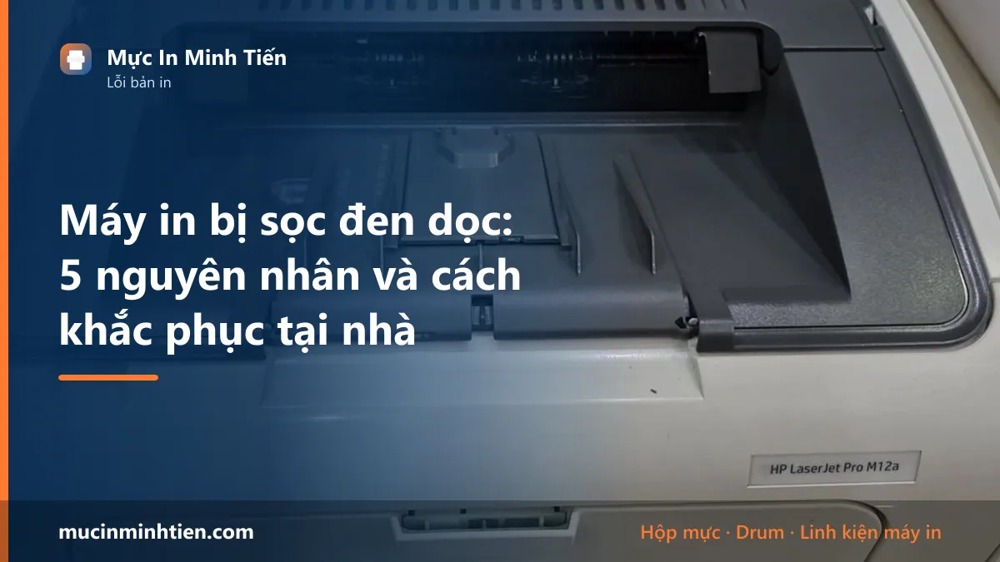

Máy in bị sọc đen dọc: 5 nguyên nhân và cách khắc phục tại nhà

Đang in tài liệu thì trang giấy xuất hiện vệt sọc đen chạy dọc từ trên xuống dưới — lỗi này gặp ở hầu hết máy in laser, từ Canon 2900, HP 1102 đến Brother HL-L2321D. Tin tốt là: nhìn hình dạng vệt sọc có thể đoán khá chính xác nguyên nhân, và một nửa số trường hợp bạn tự xử lý được tại nhà không tốn đồng nào.
5 nguyên nhân khiến máy in bị sọc đen dọc
1. Trống từ (drum) bị xước
Đây là nguyên nhân phổ biến nhất với vệt sọc đen mảnh, sắc nét, vị trí cố định trên mọi trang. Bề mặt drum bị xước do giấy kém chất lượng, ghim kẹp giấy sót lại, hoặc drum đã quá tuổi thọ (thường sau 2–3 lần nạp mực). Drum xước thì không sửa được — phải thay drum mới.
2. Gạt mực (wiper blade) bị mòn hoặc mẻ
Gạt mực có nhiệm vụ gạt sạch mực thừa trên drum sau mỗi vòng quay. Khi lưỡi gạt mòn hoặc bị mẻ một điểm, mực thừa lọt qua tạo thành vệt sọc rộng, hơi mờ, có thể kèm lem. Thay gạt mực chi phí thấp, làm cùng lúc khi nạp mực là tiện nhất.
3. Mực vón cục hoặc mực kém chất lượng
Mực để lâu bị ẩm, hoặc mực nạp không đúng chủng loại, sẽ vón thành hạt nhỏ kẹt ở khe gạt — bản in xuất hiện sọc xám không đều, lúc có lúc không. Trường hợp này cần đổ mực cũ ra, vệ sinh hộp mực và nạp lại mực đúng loại.
4. Vật lạ kẹt trong hộp mực hoặc khe giấy
Mảnh giấy vụn, ghim, bụi giấy tích tụ lâu ngày có thể tì vào drum hoặc trục từ tạo sọc. Tháo hộp mực ra, lắc nhẹ và quan sát khe gạt dưới ánh sáng — nếu thấy vật lạ, gắp ra bằng nhíp là hết sọc ngay.
5. Gương phản xạ / cụm quang bị bẩn
Ít gặp hơn, nhưng nếu đã thay drum, thay gạt mà vẫn sọc — thường là sọc trắng dọc (mất chữ) chứ không phải sọc đen — thì cụm gương laser bên trong máy bám bụi, cần kỹ thuật viên tháo máy vệ sinh.
Cách khắc phục từng bước
- In trang test: in 3–4 trang liên tiếp để xác nhận vệt sọc cố định hay thay đổi vị trí.
- Tháo hộp mực, quan sát: lắc nhẹ hộp mực, kiểm tra khe gạt xem có vật lạ, mực vón; nhìn bề mặt drum (ống màu xanh/tím bóng) dưới ánh sáng chéo tìm vết xước. Lưu ý: không sờ tay và không để drum ra nắng trực tiếp quá lâu.
- Vệ sinh nhẹ: dùng khăn khô mềm lau viền khe gạt, gắp vật lạ nếu có, lắp lại và in thử.
- Xoay quy trình loại trừ: nếu có 2 máy cùng dòng, hoán đổi hộp mực để xác định lỗi nằm ở hộp mực hay ở máy.
- Thay linh kiện đúng bệnh: sọc mảnh sắc nét → thay drum; sọc rộng mờ → thay gạt mực; sọc xuất hiện sau nạp mực → vệ sinh và nạp lại mực đúng loại.
Khi nào nên gọi kỹ thuật viên?
Nếu đã vệ sinh mà vệt sọc vẫn còn, hoặc bạn xác định drum xước / gạt mòn nhưng không muốn tự thay, kỹ thuật viên Mực In Minh Tiến có thể kiểm tra và thay drum, gạt mực ngay tại nhà ở TP.HCM — thường xử lý xong trong một lần hẹn, có báo giá trước. Tham khảo dịch vụ nạp mực, thay drum tận nơi hoặc bảng giá hộp mực, drum theo model.